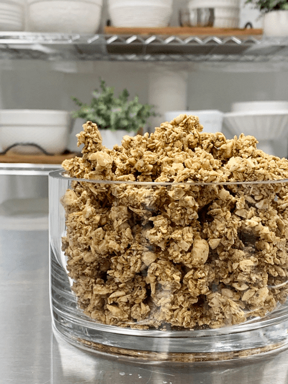
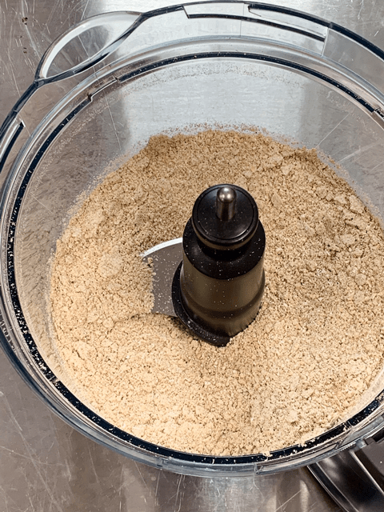
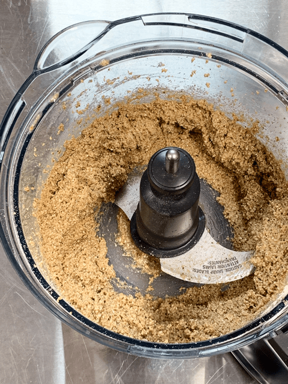
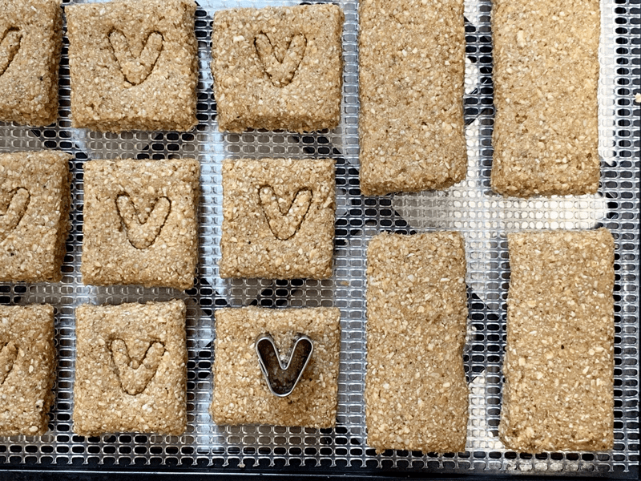
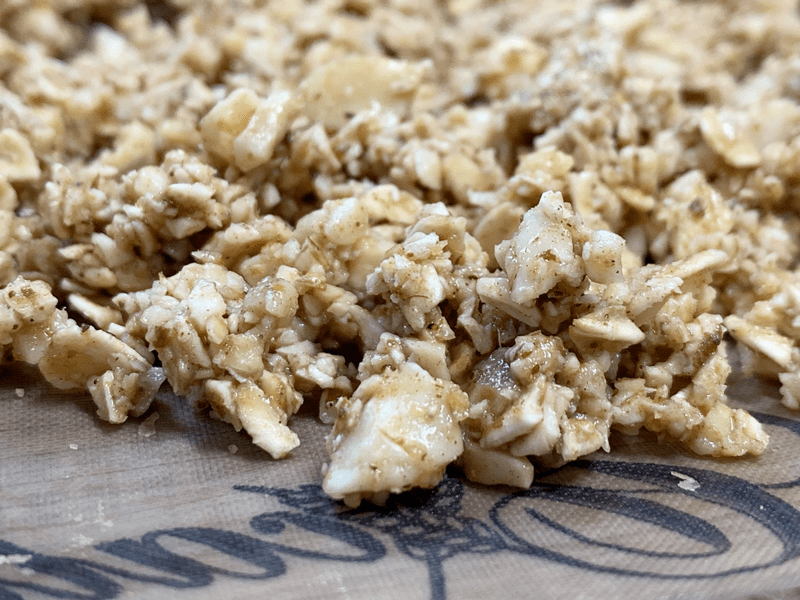

Veronica’s Spiced Bourbon Barrel Aged Maple Oatmeal Goodies
This recipe was born as a result of a recipe request that one of our dear members Veronica submitted. She has been with Nouveauraw for many years, and I have had the pleasure to become pen-pals with her. Our connection first started when we did a 30+ day sugar-free challenge together. We held one another accountable each day, and through our sugar withdrawals, we bonded.
ONE recipe / FIVE treats (cookies, clusters, cereal, bars, granola)
Low Sugar / Gluten-free / Vegan
For the 2018 holidays, I created a Bourbon Barrel Aged Fudge recipe that Veronica simply loved. She filled out the recipe request form asking me to create another recipe using that exact maple syrup, so I jumped at the opportunity to create a yummy treat for my dear friend in Sweden.
In her request, she also asked for the recipe to be either a trail mix, granola, bar, or cookie recipe as well as something that would be easy to snack on that might include oats, and not be too heavy on nuts. I hope I delivered that for her.
I love oatmeal cookies, and I don’t think a person can go wrong no matter what you add to them. Oats have such a wholesome flavor but can be a tad drying on the tongue, especially when using them raw. Not only did the maple syrup add moisture to the recipe, but it also helped as a binder in holding all the ingredients together.
“V” for Veronica or Very Good… however you want to look at it :)
To add a rich, delicate flavor that wouldn’t overpower the oats, I used macadamia nuts. They are slightly sweet with a buttery undernote which I felt paired perfectly with the other ingredients. Macadamia nuts are also high in fat which is excellent for many things, but mainly I wanted this snack food to be satiating. If you don’t have macadamia nuts on hand, you can use cashews instead. The flaxseeds, which account for a small portion of the recipe, were added for the nutrients as well as their binding power.
When it came to the spices, I changed things up a bit. I know Veronica didn’t want a super sweet treat, so I opened up the spice drawer and sought out warming spices to help compliment the maple syrup. If you are looking for a very sweet cereal, bar, granola, etc., this recipe won’t hit the mark UNLESS you add more sweetener to the batter. Give it a taste test once mixed and see what you think. I have to tell you that it was so much fun creating this recipe. Thank you, Veronica, for the yummy challenge. If any of you try this recipe, please share below. I would love to hear from you. blessings, amie sue
P.S. Veronica… this batter can also be rolled into power balls and chilled. I know you like to skip the dehydration process every once in a while. hehe

Ingredients:
- 1 cup (160 g) macadamia nuts or cashews
- 1 1/2 cups (155 g) rolled, gluten-free oats, soaked & dehydrated
- 1 Tbsp (8 g) brown flaxseeds, ground
- 1 tsp (2 g) Ceylon ground cinnamon
- 1/2 tsp (2 g) ground nutmeg
- 1/2 tsp (2 g) ground ginger
- 1/2 tsp (1 g) ground black pepper
- 1/4 tsp (1 g) ground cumin (optional)
- 1/4 tsp (2 g) sea salt
- 1/4 cup (80 g) Bourbon Barrel Aged Maple Syrup
- 1/4 cup (60 g) water
Cookie Glaze (optional)
- 3 Tbsp (43 g) coconut butter, melted
- 3 Tbsp (43 g) orange juice
- 1 Tbsp (20 g) Bourbon Barrel Aged Maple Syrup
- Pinch of salt
Preparation: (view photos below)
Create the Batter
- In a food processor, fitted with the “S” blade, process the macadamia nuts, oats, all spices, flaxseeds, and salt to a small crumble.
- The cumin spice is up to you. I love the unique flavor that it gives the batter.
- Add the maple syrup and water, processing until it forms into a thick, paste-like texture. *Unless making the granola, then you will want to pulse the mixture together, so it stays chunky.
- *Taste test the batter before moving on. This recipe isn’t meant to be very sweet so if you want to amp up the sweetness, add more to your liking.
Trail Mix / Granola – yields 4 cups
- Line the dehydrator tray with a non-stick sheet and spread the chunky batter over the tray.
- Dehydrate at 145 degrees (F) for 1 hour, then reduce to 115 degrees and continue to dry until the batter is dry to the touch.
- About 3 hours into drying, brush the granola over onto the mesh sheet that comes with the dehydrator. Removing the non-stick sheet will allow more air to touch the surface which speeds up the drying process.
- Allow the granola to cool, place in a bowl and add other nuts, seeds, and/or dried fruits to create a flavorful trail mix. Or don’t, it’s great all by itself. :)
- Store in an airtight container for up to two weeks or freeze for one to three months.
- Enjoy as a snack at home, on the road, at work, during school, or on the trails.
- *This turned out to be my favorite application of this batter. After roughly ten hours of dry time, it was super crunchy and dry to the touch with a wholesome flavor.
Cereal – yields 3 cups
- Once the dough is made, remove and shape into a ball. Slide it into the freezer for about 30 minutes. Chilling the dough will reduce the stickiness of the batter when creating the cereal squares.
- Line the dehydrator tray with a non-stick sheet and place the batter in the center. Shape into a ball, cover with plastic wrap and roll out to roughly 1/4″ thickness. Remove the plastic and score into small cereal squares.
- Dehydrate at 145 degrees (F) for 1 hour, then reduce to 115 degrees and continue to dry until the batter is dry to the touch.
- About 3 hours into drying, flip the cereal sheet over onto the mesh sheet that comes with the dehydrator, removing the non-stick sheet will allow more air to touch the surface which speeds up the drying process.
- Allow the cereal to cool before storing.
- Store in an airtight container for up to two weeks or freeze for one to three months.
- Enjoy with a freshly made nut milk, sliced banana, or whatever strikes your fancy.
- *I love making small squares for cereal; perhaps it reminds me of eating cereal as a little girl when I poured it out of a box. After roughly 12 hours the cereal was perfectly dry. It takes a little longer to dry than the granola application due to it drying in a sheet whereas with granola the air can reach more surface area.
Bars / Clusters – yields 10 bars or 20 cluster squares
- Line the dehydrator tray with a non-stick sheet and place the batter in the center. Shape into a ball, cover with plastic wrap and roll out to roughly 1/2″ thickness. Remove the plastic and score into bar shapes or square cluster shapes. GENTLY transfer to the mesh sheet.
- Dehydrate at 145 degrees (F) for 1 hour, then reduce to 115 degrees and continue to dry until the bars are dry to the touch.
- Allow the bars to cool before storing.
- Store in an airtight container for up to two weeks or freeze for one to three months.
- *I dried mine for about 10 hours, perfectly dry to the touch, don’t stick them to one another if stacked. I suggest dedicating one bar to taste testing through the drying time so you can stop it depending on how moist or dry you want them.
Cookies – yields 16 (2 1/2 Tbsp each)
- Line the dehydrator tray with a non-stick sheet and place the batter in the center. Shape into a ball, cover with plastic wrap and roll out to roughly 1/4″ thickness. Remove the plastic and with a circular cookie cutter press out the circle shapes. GENTLY transfer to the mesh sheet.
- Dehydrate at 145 degrees (F) for 1 hour, then reduce to 115 degrees and continue to dry until the batter is dry to the touch.
- Allow the cookies to cool before storing.
- Store in an airtight container for up to two weeks or freeze for one to three months.
- If you glaze them, they will soften if left to sit for a few hours. They are yummy soft just wanted to let you just in case you want them to remain really firm.
Cookie Glaze (optional)
- Melt the coconut butter by placing the jar in a bowl of hot water or put it in the dehydrator cavity and set the temp at 145 degrees (F). Stir it every five minutes until it is pourable.
- In a small bowl whisk together the coconut butter, orange juice, and maple syrup. It will be runny at first. If the oranges are cold when juiced, it will cause the glaze to thicken quickly. If that happens, you can place the bowl in the dehydrator just to soften it so you can easily spread on the cookie tops.
- Place 1 tsp of glaze into the center of each and gently spread it towards the edges.
- Let the cookies rest until the glaze is dry to the touch.
-

-
Process until it is broken down to a small/fine crumble.
-

-
After adding the liquids, it will look like this.
Ready to make COOKIES?
Ready to make BARS OR CLUSTERS?

Roll the dough out to 1/2″ thickness and cut into desired shapes. I used a long stainless steel ruler. For fun, to personalize it for Veronica, I pressed a “V” cookie cutter shape into the dough.
Ready to make Granola / Trail Mix?

Instead of processing the ingredients into a paste-like texture, I just hit the pulse button enough times to mix everything together, yet leave larger chunks.
Ready to make Cereal?
© AmieSue.com